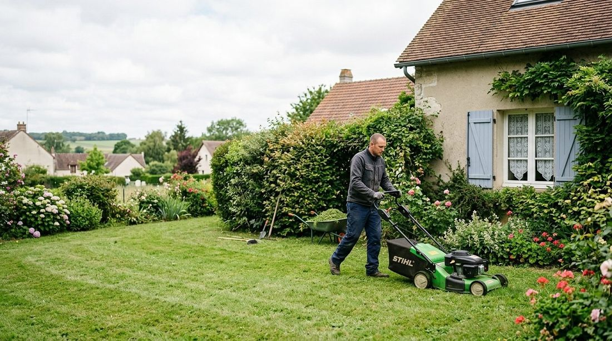
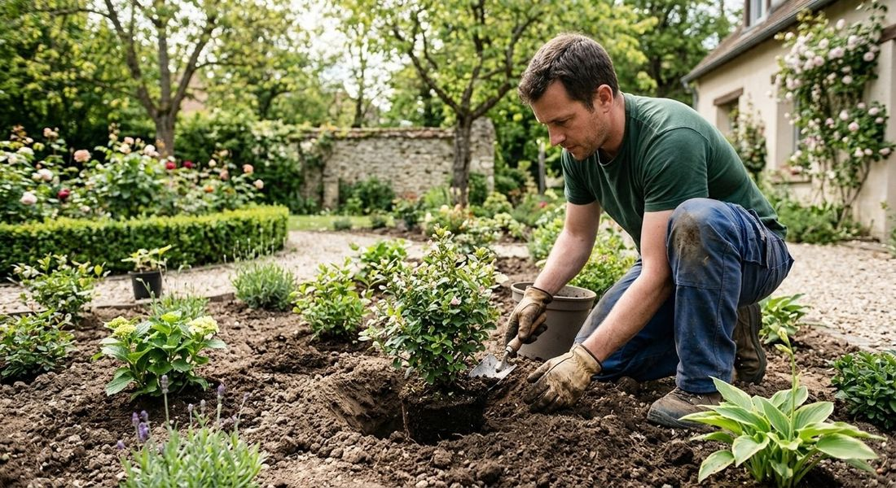
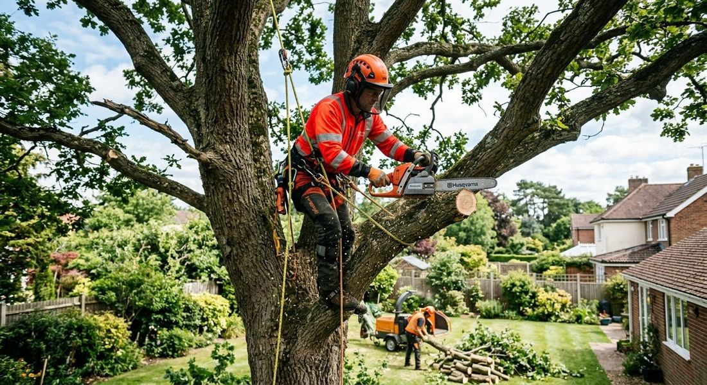
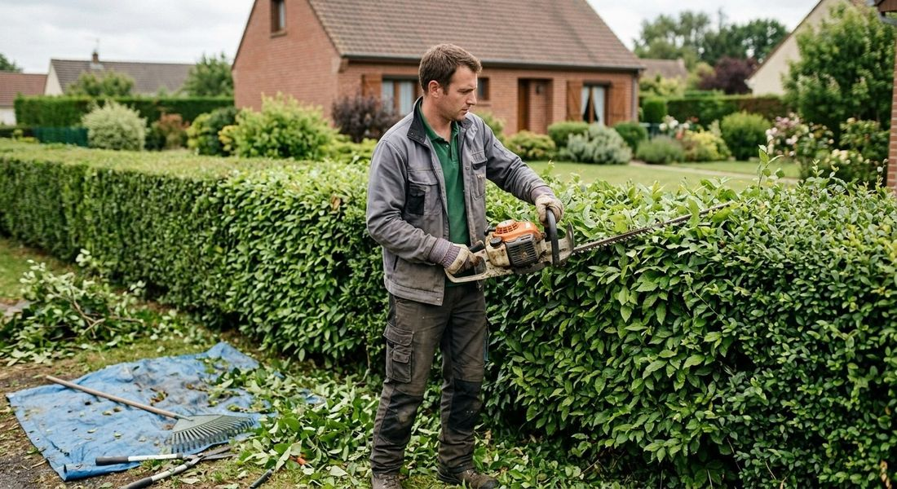
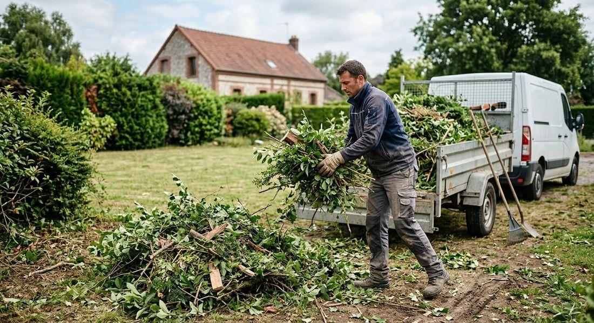
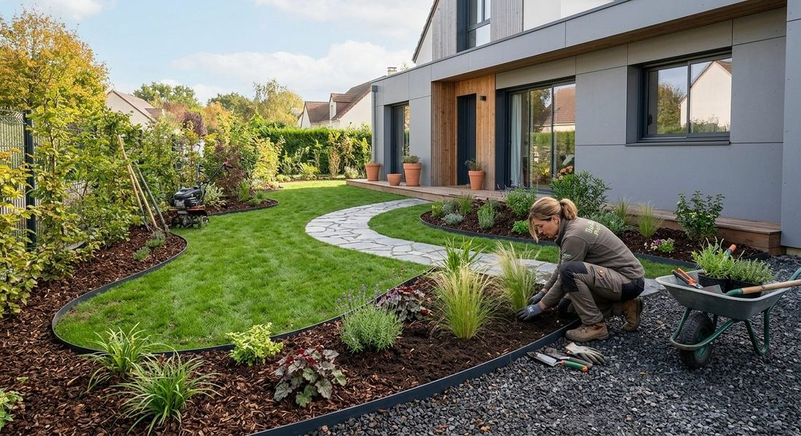

Nos prestations
Entretien et création de jardins, en harmonie avec la nature.
Contrats d’entretien, interventions ponctuelles, création de jardins et élagage : Biovert Jardins prend soin de vos espaces verts dans les Yvelines.




Contrats d’entretien
Un jardin impeccable, toute l’année.
Des passages mensuels, bimensuels ou selon vos besoins, adaptés à la saison, à votre type de jardin et à vos préférences.
- Tonte de pelouse, taille de haies et d’arbustes
- Désherbage manuel et écologique
- Fertilisation naturelle et paillage
- Suivi et soins des plantations
Interventions ponctuelles
Un coup de frais, sans engagement.
Avant un événement, à la sortie de l’hiver ou en préparation de l’été : des interventions ciblées et efficaces.
- Nettoyage de printemps ou d’automne
- Taille de rajeunissement
- Évacuation des déchets verts
- Traitements naturels contre maladies et parasites


Création de jardins
Créer ou transformer votre jardin.
Un jardin durable, esthétique et fonctionnel, qui respecte la biodiversité.
- Massifs fleuris, potagers ou espaces naturels
- Plantation d’arbres, arbustes et haies
- Paillis, bordures et allées
- Gestion de l’eau et permaculture
Élagage d’arbres
Des arbres sains, bien conduits.
Biovert Jardins intervient pour l’élagage des arbres, en complément de l’entretien et de l’aménagement de votre jardin.
Contact
Un projet en tête ? Parlons-en.
Décrivez-nous votre jardin : nous vous répondons du lundi au vendredi, de 8h à 18h.
- 06 19 58 28 76
- contact@biovertjardin.com
- 12 avenue des Prés, 78180 Montigny-le-Bretonneux